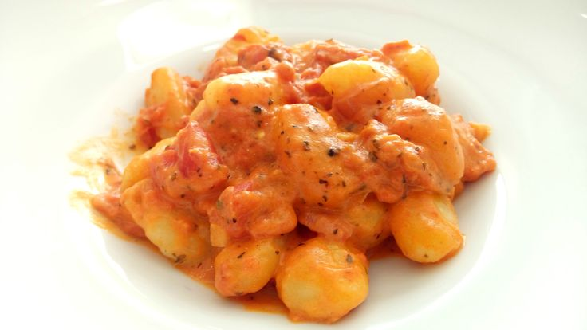

In One Pan Gnocchi Roast

A creamy and flavoursome gnocchi bake that only needs one baking dish!
Ingredients
- 500g Gnocchi
- 300g Cherry Tomatoes
- 2 Red Peppers
- 1 Tablespoon Smoked Paprika
- 1 Teaspoon Chilli Flakes - or to taste
- 150g Mascarpone
Steps
- Preheat oven to 180C.
- Chop the peppers into bitesize chunks.
- Add the gnocchi, tomatoes and peppers to the baking dish.
- Mix in the spices.
- Bake for 30 minutes, making sure to mix the contents every 10 minutes.
- Remove from oven and mix in the mascarpone